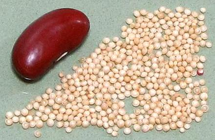

Amaranth Seeds

[Kiwicha (Inca); Amaranthus cruentis, A. hypochondriaca,
A. caudatus | India Amaranthus viridis]
There are at least 70 species of Amaranth, and some of them produce
seeds of sufficient size and quantity to be harvested and used similarly
to grains. These seeds are eaten in various parts of the world, and are
seeing a resurgence in the Americas after Spanish suppression. Listed
above are species most noted for producing edible seeds, which are
very similar to Quinoa seeds.
For Greens, see our
Amaranth Greens page.
The most important seed amaranths are native to the American
tropics, but are now grown worldwide. Amaranth was of great importance
to the Incas because it grew well in the high mountainous regions of
Peru and was highly nutritious. It has more recently become of some
importance in the Himalayan region of Asia for similar reasons.
Spanish conquerors of Peru were very disturbed by amaranths use
in a ritual too close to Christian communion for comfort, and banned
its cultivation. The crop has recently gone back into production because
of its nutritional attributes, and it is now widely available. It is
slowly escaping from the "health food" market into the mainstream,
though not as quickly as Quinoa.
More on Amaranth Family.
Buying:
Amaranth seeds are gradually escaping the
Yuppie and "health food" markets and are increasingly available in the
multi-ethnic markets that abound here in Los Angeles. Markets that
carry the Bob's Red Mill line of products often have it.
Storing:
Seeds should be kept in a tightly sealed jar,
away from light and as cool as possible. Under these conditions it will
keep for about a year. Once ground into flour it is highly perishable and
should be kept refrigerated and only for a few days - preferably grind as
needed.
Health & Nutrition:
Amaranth is high in protein and
that protein is nearly perfectly balanced for human consumption. Wheat,
rice and corn must be accompanied by beans to balance the protein content
but that isn't necessary with amaranth. Amaranth is also gluten free and
can be freely eaten by people with a gluten intolerance (celiacs).
Amaranth seed is thought to reduce blood pressure and cholesterol
levels.
ch_amaransz 100315 - www.clovegarden.com
©Andrew Grygus - agryg@clovegarden.com - Photos
on this page not otherwise credited © cg1
- Linking to and non-commercial use of this page permitted